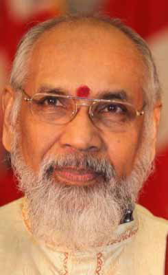
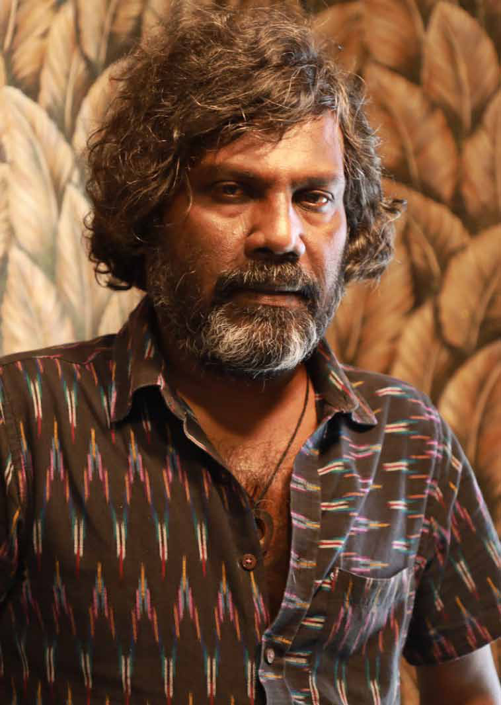
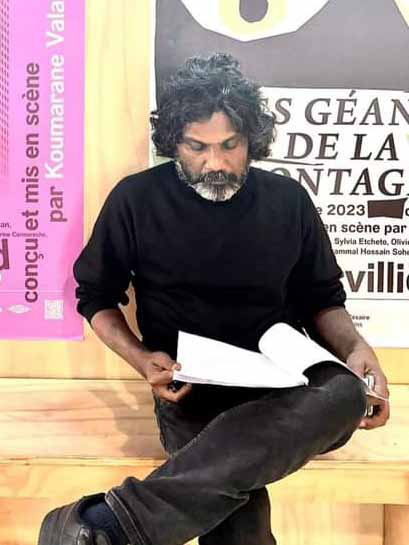

Proposals for a Common Tamil Candidate:
Proposals for a Common Tamil Candidate:
Jaffna Monitor hellojaffnamonitor@gmail.com 4 D iscussions about the upcoming presidential election have begun in the Tamil political arena. One of the first to express an opinion on the presidential election was Suresh Premachandran, Secretary of the Eelam People's Revolutionary Liberation Front (EPRLF) and a leader of the Democratic Tamil National Alliance (DTNA). He had suggested, months earlier, that a common Tamil candidate should be nominated for the presidential election. Following his proposal, the DTNA announced at a meeting in Mannar their intention to nominate a common Tamil candidate. Additionally, Jaffna district parliamentarian and Tamil People's National Alliance (TPNA) Proposals for a Common Tamil Candidate: By: Our Reporter The Tamil Parties' Tug of War

Jaffna Monitor hellojaffnamonitor@gmail.com 5 Leader C.V. Vigneswaran has also expressed support for this idea. True to his self- aggrandizing nature, he went a step further by declaring his readiness to be the common Tamil candidate in the presidential election. The Tamil National People's Front (TNPF), consistent with its unconventional functioning style, has announced that it will not participate in any form of the presidential election. Furthermore, the leaders of the TNPF even scoffed at the idea of appointing a common candidate. Up to this point, the Ilankai Tamil Arasu Kachchi (ITAK), which is embroiled in a legal battle over its party leadership, has not clearly articulated its stance. As ITAK's leaders were preoccupied with internal ego clashes and ongoing political battles in court. Against this backdrop, a symposium named 'People's Petition' was recently held in Jaffna, focusing on discussions about nominating a common Tamil candidate for the presidential election. Sritharan, the leader recently elected by the ITAK in their internal election, also attended. The majority of political leaders at the symposium voiced their support for a common Tamil candidate. However, Shanakiyan Rasamanickam, a Batticaloa district Member of Parliament and a prominent figure in the Sumanthiran faction of ITAK, has expressed opposition to the idea of a common Tamil candidate for the presidential election. Political observers note that enthusiasm for a common Tamil candidate might diminish if the ITAK does not lend its support. Therefore, they have pointed out that the success of the initiative to nominate a common Tamil candidate largely hinges on ITAK's decision. Currently embroiled in a leadership contest and internal conflicts, the Tamil Arasu Katchi appears incapable of making a collective decision. As long as their legal issues remain unresolved, political observers suggest that their ability to make a unified choice seems unlikely. It is clear that even if the parties unite to nominate a common presidential candidate for the Sri Lankan Tamils, it will not be significantly effective considering the demographic disparity between the Tamil and Sinhala populations in Sri Lanka. Due to this disparity, The Tamil community cannot realistically secure a win in a presidential election. However, as some optimists believe, nominating a common Tamil candidate could symbolize a show of unity and solidarity among Tamils in the electoral process. Yet, this symbolic gesture might not have a significant impact on the actual outcome of the election. It may also not encourage active participation from Tamil parties and their supporters, given the improbability of winning the presidency under these circumstances. In this scenario, a few political observers believe that Tamil parties intending to support a Sinhala candidate likely to win the presidential election could play a pivotal role. They argue that such support places these parties in a strategic position for negotiation with the presidential candidate, potentially providing them with leverage and influence in the decision-making process. These observers also contend that while nominating a common Tamil candidate for the Sri Lankan presidential election might hold symbolic significance, such a move is unlikely to affect the actual outcome of the election and risks being perceived as a futile gesture.
Jaffna Monitor hellojaffnamonitor@gmail.com 6 Interview Exclusive Interview with Shobasakthi Disturbing the Readers' Peace is the Essence of Good Art

Jaffna Monitor hellojaffnamonitor@gmail.com 7 S hobasakthi, an eminent Sri Lankan Tamil author, is renowned for his exceptional narrative skills, endowing his prose with a vivid and dynamic vitality. His Novels, especially 'Gorilla', 'M', 'BOX: A Story Book', and 'Ichaa', have achieved significant acclaim within the Tamil diaspora and have been translated into multiple languages. In addition to his prowess in novel writing, Shobasakthi exhibits a remarkable adeptness in crafting short stories and essays, further demonstrating his versatile literary competence. Shobashakthi's artistic journey took a notable turn in 2015 when he expanded his horizons from the literary world to cinema, showcasing his acting skills in the French film 'Dheepan'. In this movie, he portrayed the role of a Sri Lankan refugee. This performance contributed to the film's triumph in securing the prestigious Palme d'Or at the Cannes Film Festival, thus accentuating his multifaceted artistic talent. Having embarked on his literary career with the publication of his inaugural short story in 1997, Shobashakthi has since charted a deep and enduring course in the sphere of literature, continuously infusing it with his distinctive insights and stylistic eloquence. Shobashakthi's literary oeuvre deeply explores the experiences of Sri Lankan Tamils, blending acute observations with a mixture of wit and political satire. His unique approach in addressing complex issues, combined with his bold criticism of entrenched beliefs and dominant opinions, whether it concerns the caste system or the Liberation Tigers of Tamil Eelam (LTTE), has attracted a wide-ranging readership. His audience includes numerous admirers who praise his work, as well as others who vehemently denounce him and his writings. The saying, "You can love him or hate him, but you definitely can't ignore him," aptly encapsulates the impact of Shobashakthi on Eelam Tamil literature. Despite the diverse opinions surrounding his work, Shobashakthi's influence is undeniable. His contributions have become an essential element of its history, profoundly enriching and significantly shaping the narrative of Eelam Tamil literature. We recently had the privilege of sitting down with the maverick writer Shobasakthi for an exclusive interview with Jaffna Monitor. Here are the excerpts from our conversation. How did Antonythasan Jesuthasan become known as Shobaskathi? Many people have theorized about BY: Our Special Correspondent
